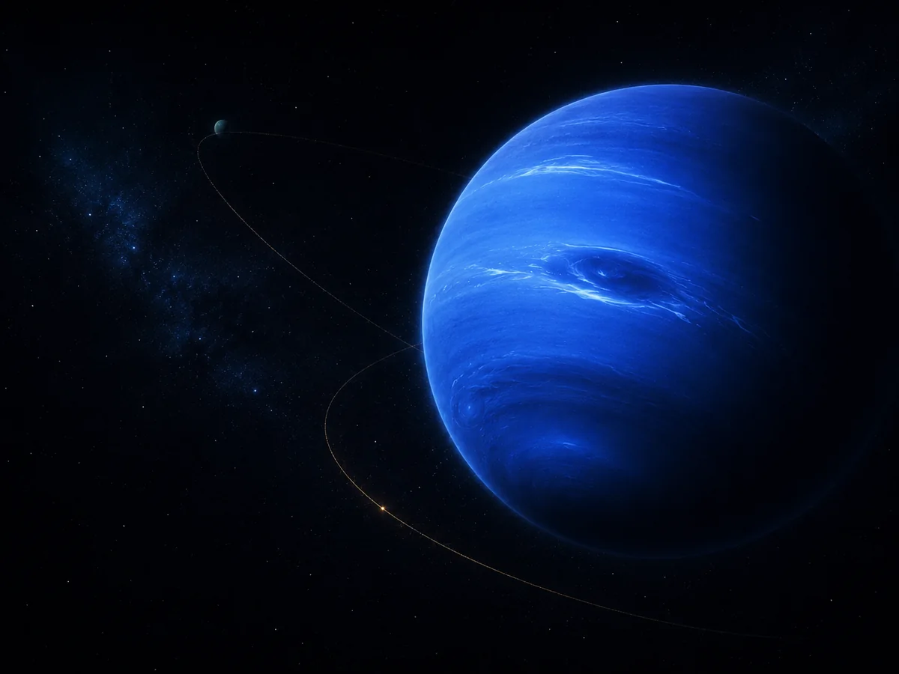
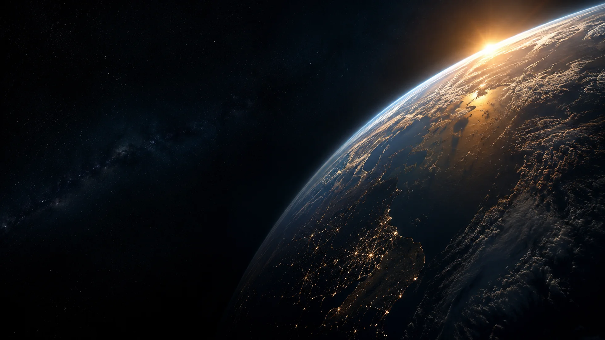
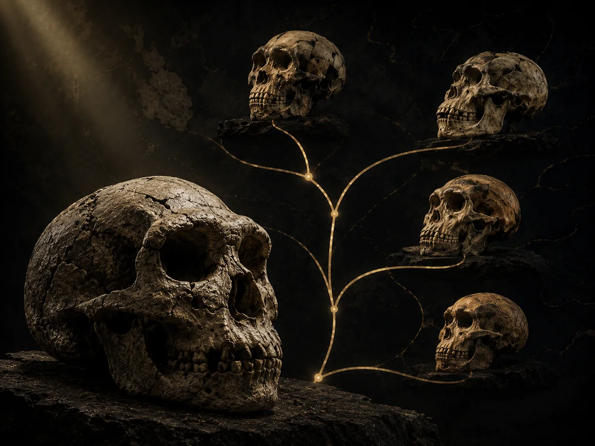
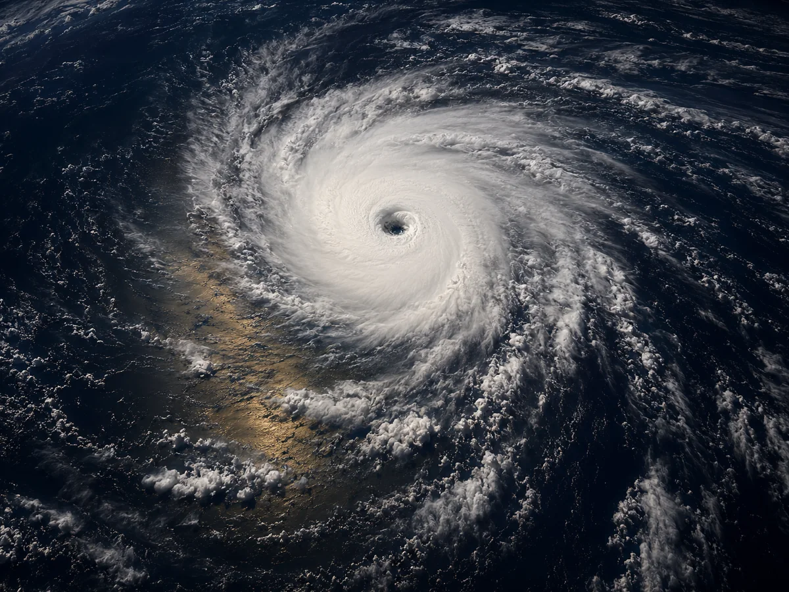
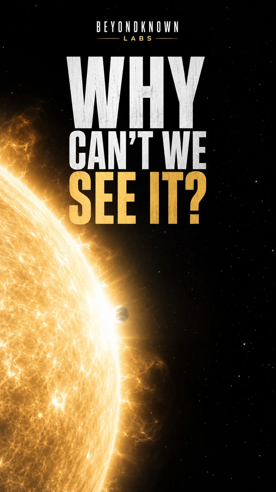
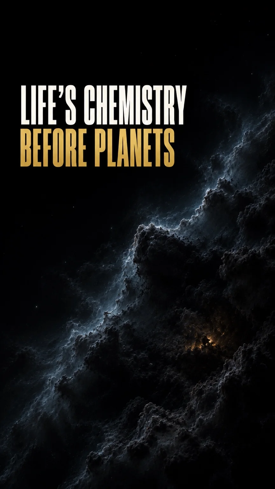
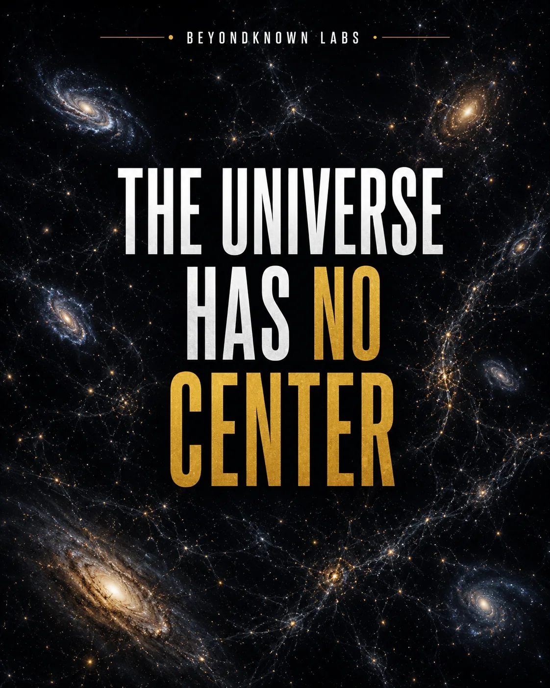
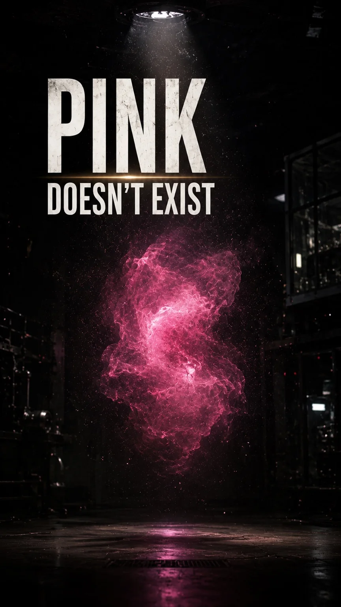
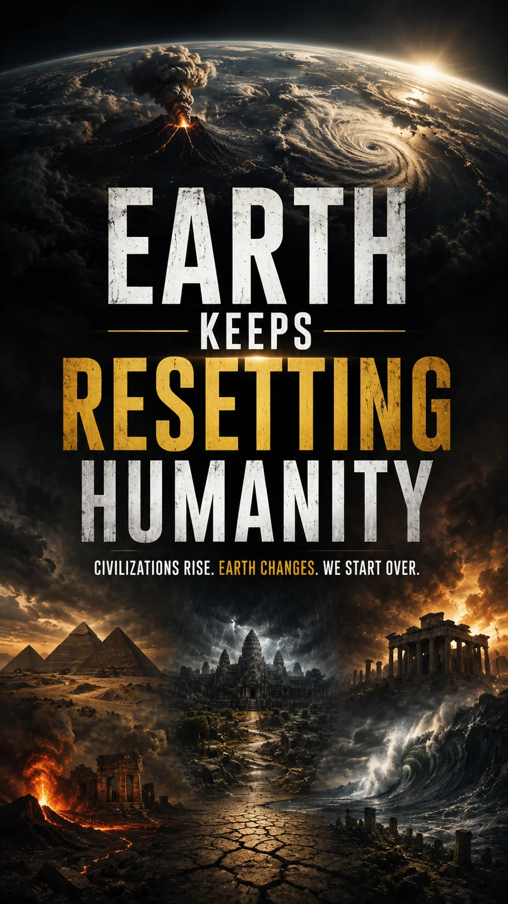

Astronomy
Neptune was discovered through mathematics
Its position was predicted from unexplained changes in Uranus’s orbit before Neptune was observed.

BeyondKnown Labs
We explore the discoveries, hidden systems, and credible mysteries that change how reality looks.
About
BeyondKnown Labs is a science media brand focused on the parts of reality that are easy to miss: distant worlds, planetary forces, ancient life, vanished civilizations, perception, and unusual discoveries supported by credible evidence.
We separate observation from inference, hypothesis, and speculation—using curiosity without sacrificing scientific responsibility.
Featured discoveries
Three gateways into the subjects BeyondKnown Labs follows.

Astronomy
Its position was predicted from unexplained changes in Uranus’s orbit before Neptune was observed.

Ancient life
Fossils preserve a branching history of related populations, adaptations, and extinctions.

Earth science
Warm ocean water, rising moisture, pressure differences, and rotation organize a vast heat engine.
Featured reels
Short-form science stories built for clarity, atmosphere, and curiosity.





What we explore
Worlds, stars, cosmic structure, and the search for what remains unseen.
Oceans, geology, climate, and extreme natural phenomena.
Ancient organisms, unusual biology, adaptation, and extinction.
Civilizations, lost landscapes, and evidence that changes historical understanding.
Hidden mechanisms, limits of the senses, and counterintuitive reality.
Unresolved questions approached with evidence, restraint, and clear uncertainty.
Contact
Send credible discoveries, research leads, corrections, or collaboration enquiries to:
beyondknownlabs@gmail.com